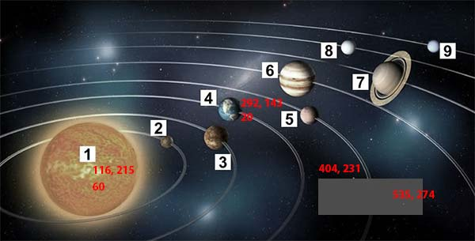

Constructor được dùng rất nhiều trong lập trình và đối với lập trình hướng đối tượng khi dữ liệu của đối tượng là một con trỏ thì nó lại rất cực kì quan trọng mà bạn phải chú tâm đến.
Constructor là một Constructor đặc biệt, nó được dùng để tạo một bản sao của một đối tượng đã có trước đó. Copy Constructor có tham số là địa chỉ vùng nhớ tham chiếu đến đối tượng cần sao chép.
